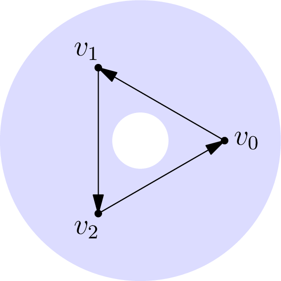

November 27th
Today I learned the definition of homology groups from algebraic topology, from the Napkin. These, in essence, measure holes in a surface. We have to go a bit of a journey before reaching the definition, however. Using the formalization of algebraic topology from simplices inside of our topological space $X,$ we go ahead and define\[[v_0,\ldots,v_n]\]as the convex hull of these $n+1$ points. The order of the vertices does matter. Provided the points are non-coplanar (or similar), this defines an $n$-simplex. In order to be able to combine simplices, we define $C_n$ as formal linear combinations of these $n$-simplices. Explicitly,\[C_n=\left\{\sum_ka_k\sigma_k:\{a_k\}\subseteq\ZZ,\{\sigma_k\}\text{ simplices}\right\}.\]For example, $[v_0,v_1,v_2]$ is a triangle ($3$-simplex) in the plane. Its border is the linear combination of $2$-simplices $[v_0,v_1]-[v_0,v_2]+[v_1,v_2].$ More generally, we define the boundary operator $\del:C_n\to C_{n-1}$ by letting\[\del([v_0,\ldots,v_n])=\sum_{k=0}^n(-1)^k[v_0,\ldots,v_{k-1},v_{k+1},\ldots,v_n],\]and then extending linearly so that\[\del\left(\sum_ka_k\sigma_k\right)=\sum_ka_k\cdot\del\sigma_k.\]One of the nice properties of the $\del$ operator is that $\del^2(C_\bullet)=0.$ It suffices to check\begin{align*} \del^2([v_0,\ldots,v_n]) =& \sum_{k=0}^n(-1)^k\del([v_0,\ldots,v_{k-1},v_{k+1},\ldots,v_m]) \\ =& \sum_{k=0}^n(-1)^k\left(\sum_{\ell=0}^{k-1}(-1)^\ell\del([v_0,\ldots,v_{\ell-1},v_{\ell+1},\ldots,v_{k-1},v_{k+1},\ldots,v_m])\right. \\ &+ \left.\sum_{\ell=k+1}^n(-1)^{\ell-1}\del([v_0,\ldots,v_{k-1},v_{k+1},\ldots,v_{\ell-1},v_{\ell+1},\ldots,v_m])\right) \\ =& \sum_{\substack{k,\ell=0\\\ell{\lt}k}}^n(-1)^{k+\ell}\del([v_0,\ldots,v_{\ell-1},v_{\ell+1},\ldots,v_{k-1},v_{k+1},\ldots,v_m]) \\ &- \sum_{\substack{k,\ell=0\\\ell{\gt}k}}^n(-1)^{k+\ell}\del([v_0,\ldots,v_{\ell-1},v_{\ell+1},\ldots,v_{k-1},v_{k+1},\ldots,v_m]) \\ =&\, 0,\end{align*}where the last equality holds because both sums are equal after exchanging $k$ and $\ell.$ Extending this linearly finishes.
We care that $\del^2$ is the $0$ mapping because it induces the complex\[\cdots\stackrel\del\longrightarrow C_3\stackrel\del\longrightarrow C_2\stackrel\del\longrightarrow C_1\stackrel\del\longrightarrow C_0\stackrel\del\longrightarrow 0.\]I.e., each image maps into the kernel. This is not an exact sequence because we don't necessarily surject onto the kernel. Explicitly, there might exist a sum of simplices that have boundary $0$ but are not themselves a boundary of a higher-dimensional object. I guess the canonical example is the annulus with a cycle around the hole.
By construction this is a cycle—that is, it has no boundary. Indeed, we can imagine filling this to be the border of a triangle, and then there is no border of the border of a triangle. However, it is not actually the boundary of a triangle. We can't make the triangle to fill in this simplex because of the hole in the middle. So we have detected the hole in a somewhat algebraic way.
With this in mind, we define our homology group to measure these failings. That is, we let the $n$th homology group be\[H_n=\op{ker}\left(C_n\stackrel\del\to C_{n-1}\right)/\op{im}\left(C_{n+1}\stackrel\del\to C_n\right).\]This is well-defined because the $C_\bullet$ is abelian, so the images and kernels are all abelian and therefore normal subgroups of each other. In an abstract sense, this is really just a measurement of how much our complex failed to be an exact sequence, and this abstract context is I guess why I really care.